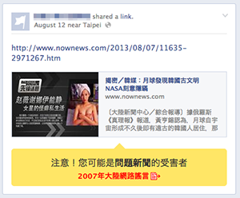
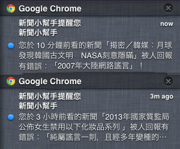

功能總覽

即時監測問題新聞
瀏覽 Facebook 等各大網站時，由本地資料庫資訊在瀏覽器內即時檢查新聞是否曾被回報，不會傳回任何瀏覽記錄，兼顧隱私與網路閱聽品質。
整合式回報按鈕
在 Facebook 介面完美整合回報按鈕，簡單一個步驟即可回報問題新聞，您隨時也能為守護網路閱聽品質盡一份心力！

背景提醒訊息
新聞小幫手會默默地在背景更新本地資料，若發現您曾經讀過的新聞被加入回報資訊，將彈出訊息提醒，滴水不漏地守護您。
在媒體亂象日趨嚴重當下，「新聞小幫手」藉助科技與群眾的力量，提供一個平台讓每個人回報有問題的新聞，並且透過瀏覽器擴充套件即時監控每一個網頁，當發現您正在瀏覽可能有問題的媒體資訊時，「新聞小幫手」會適時提醒您要抱持懷疑的態度來審視網路上的訊息，期盼結合每個人的貢獻，共同提升網路閱聽品質。
「新聞小幫手」所有檢測都在您的電腦裡完成，不會傳送任何瀏覽記錄，無需擔心任何上網隱私外洩。
所有擴充套件皆為完全開放原始碼的專案，若有任何疑慮可以閱讀原始碼以求證安全性。
我要回報新聞
已回報新聞
| 最後更新 | 新聞 | 問題點 | 真相 | 管理 |
|---|---|---|---|---|
| 12分鐘前 |
www.appledaily.com.tw
|
這新聞應該是源自於紐約時報,其他新聞來源引用卻沒來源 | 連結 |